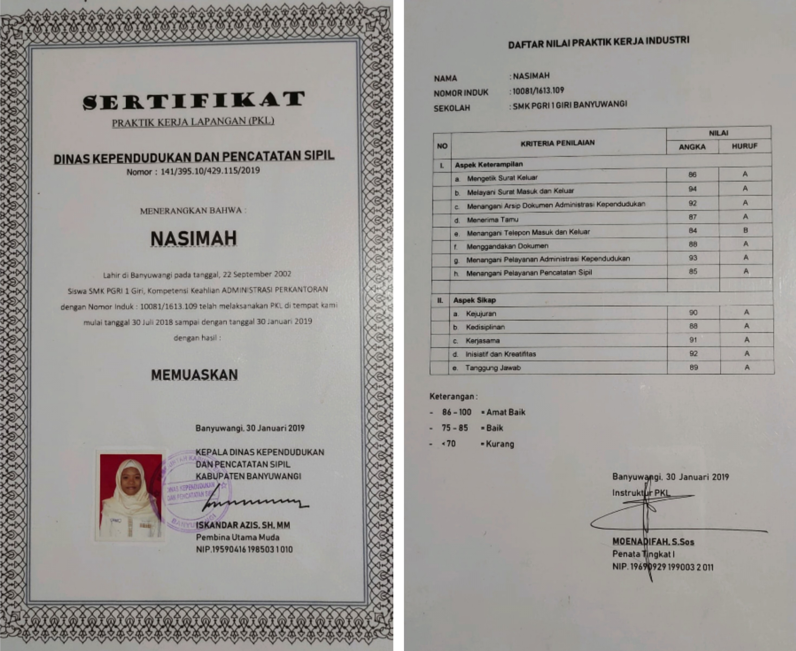

Data Diri
Nama : Nasimah
Tempat Tanggal Lahir : Banyuwangi, 22 September 2002
Umur : 19 Tahun
Alamat : Gumuk - Licin
Jenis Kelamin : Perempuan
Status : Belum menikah
Riwayat Pendidikan
- SDN 3 Gumuk, Banyuwangi (2009-2014)
- SMPN 1 Licin, Banyuwangi (2015-2017)
- SMK PGRI 1 Giri Banyuwangi (2018-2020)
- Sedang menempuh S1 di STIKOM PGRI Banyuwangi angkatan (2020)
Pengalaman kerja dan organisasi
Belum terjun ke dunia kerja, namun pernah magang di salah satu organisasi yaitu
kantor Dispenduk Capil Banyuwangi selama 6 bulan

Hard skill
- Mengetik dan melayani surat masuk dan surat keluar
- Menangani pelayanan dan arsip dokumen administrasi kependudukan
- Menangani pelayanan pencatatan sipil